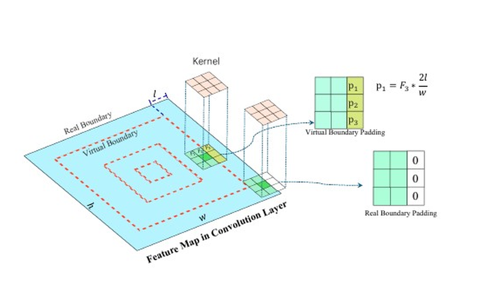
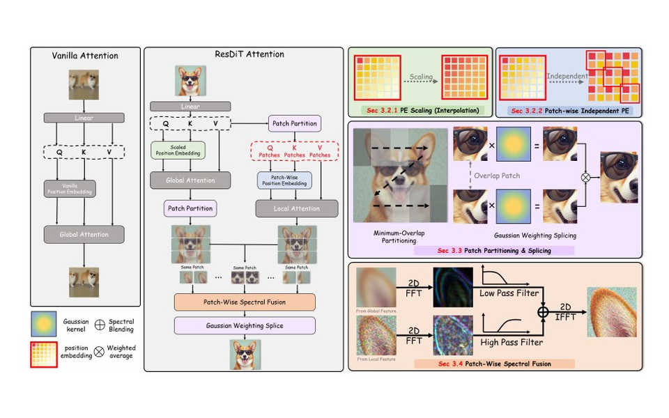
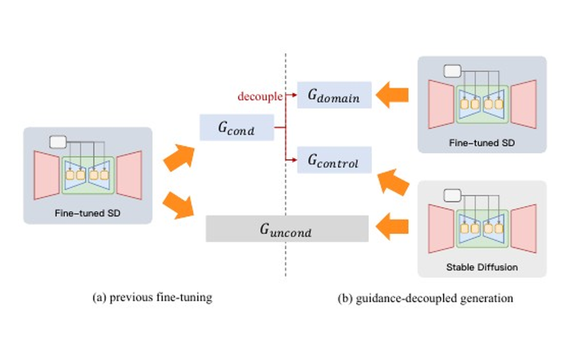
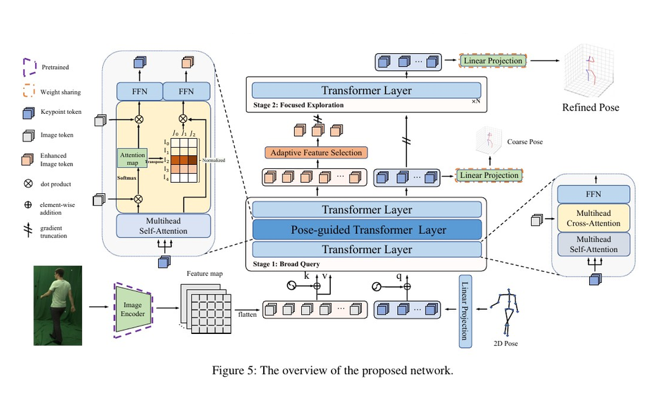
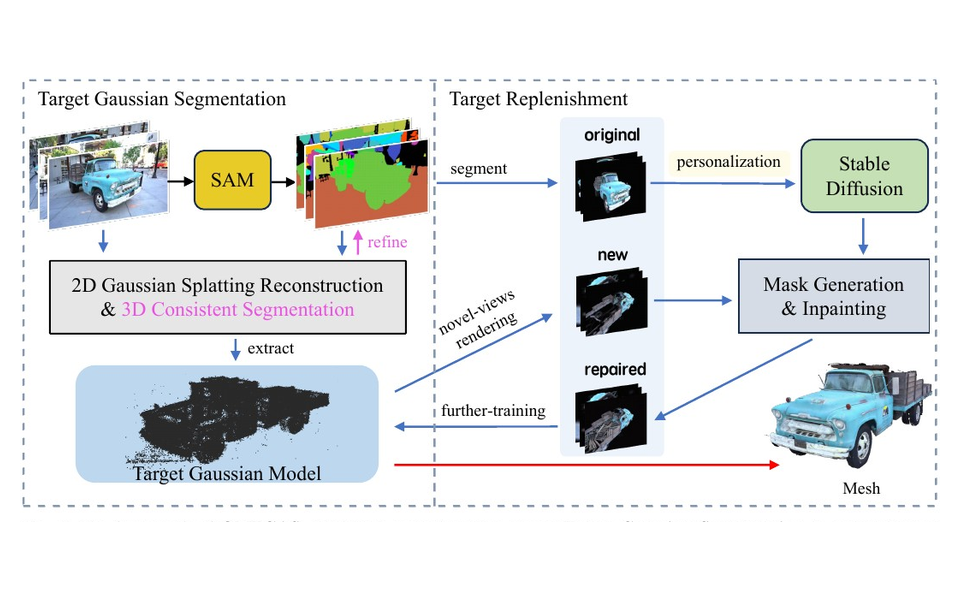

个人简介
个人简介
- 我目前是北京邮电大学控制科学与工程专业博士研究生，师从尹建芹教授，在 BUPT-COST Lab 开展研究；本科毕业于北京邮电大学物联网工程专业，获工学学士学位。
- 研究方向主要围绕三维视觉与生成模型，包括前馈式三维重建、稀疏视角重建、 3D Gaussian Splatting、三维世界模型、可控视觉生成，以及扩散模型的分辨率外推。
- 三维重建
- 三维基础模型
- 三维世界模型
- 可控生成
- 扩散模型
实习经历
Internship Experience空间智能与三维世界模型实习
参与 TOPOS1.0 与基于 3DGS 的三维世界模型研发；正在研究基于全景图像的前馈三维重建模型与场景级三维 VAE 隐空间设计。
三维重建基础模型实习
参与三维重建基础模型相关工作，围绕前馈式多视角几何推理、跨视角通信与高分辨率重建开展模型设计与实验。
研究内容
Research Overview三维重建与基础模型
围绕稀疏视角与前馈式三维重建，研究多视图几何、跨视角推理、NeRF/3DGS 场景表征与高分辨率重建等问题；相关工作包括三维重建基础模型中的跨视角通信、 稀疏注意力与高分辨率结构设计。
三维世界模型与空间智能
参与 TOPOS1.0 与基于 3DGS 的三维世界模型搭建，当前研究基于全景图像的 前馈三维重建模型，以及场景级三维 VAE 隐空间设计。
可控生成与扩散模型
围绕可控文生图、分辨率外推与生成机制分析，研究 U-Net/DiT/FLUX-like 扩散与流模型中的位置编码、注意力感受野、频率细节保持与域内生成适配。
主要论文
已发表 / 已接收工作
Exploring Position Encoding in Diffusion U-Net for Training-free High-resolution Image Generation
Analyzes the implicit positional role of convolutional zero padding in high-resolution U-Net diffusion inference and introduces a training-free boundary-complement strategy for resolution extrapolation.

ResDiT: Evoking the Intrinsic Resolution Scalability in Diffusion Transformers
Studies high-resolution extrapolation in Diffusion Transformers and FLUX-like models, focusing on positional encoding, attention receptive fields, and frequency-aware detail preservation.

Image is All You Need to Empower Large-scale Diffusion Models for In-Domain Generation
Proposes image-only domain adaptation for large-scale text-to-image diffusion models through guidance-decoupled prior preservation, reducing damage to the original controllability of the model.

Lifting by Image - Leveraging Image Cues for Accurate 3D Human Pose Estimation
Introduces pose-guided attention and adaptive feature selection to use image cues for 2D-to-3D human pose lifting while suppressing background overfitting.

OMEGAS: Object Mesh Extraction from Large Scenes Guided by Gaussian Segmentation
Extracts object-level meshes from large 3D scenes by combining 2D Gaussian Splatting segmentation with personalized diffusion priors for occluded and invisible regions.
Controllable Generation with Text-to-Image Diffusion Models: A Survey
A systematic survey of controllable text-to-image diffusion, covering condition injection, structural control, editing control, personalization, and the evolution from prompt-level to spatial- and instance-level control.